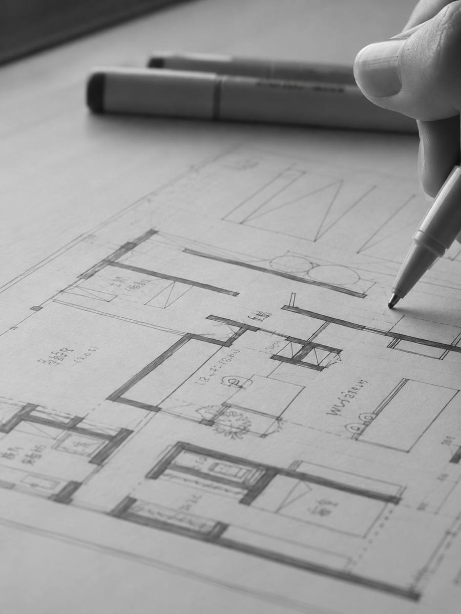
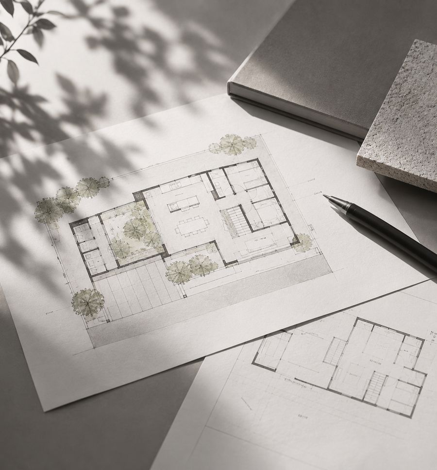
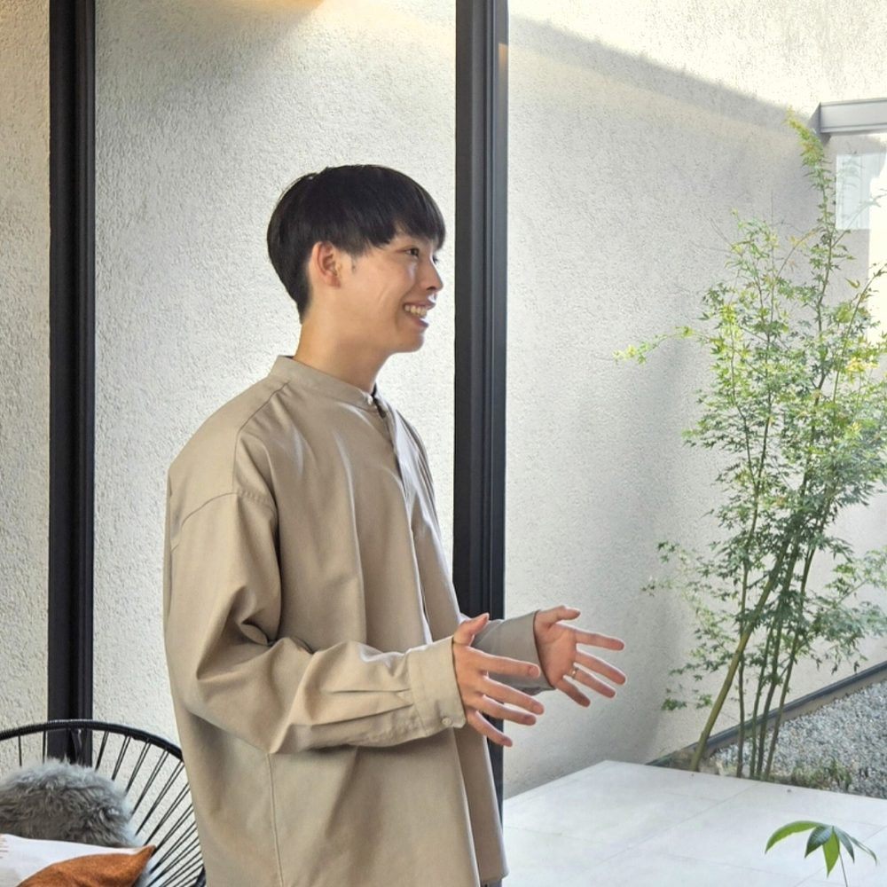

デザインの考え方
引き算から生まれる、空間の美しさ。
自分たちが暮らす家が、どこよりもお気に入りの空間であってほしい。
そんな想いを大切に、一人ひとりの暮らし方や価値観に耳を傾けながら、その人らしい暮らしを提案しています。
建築とインテリアを分けず、空間全体をひとつのデザインとして考える。
余計な装飾を加えるのではなく、光の入り方や素材の質感、細部の納まりを大切に、時を重ねても愛着の深まる暮らしを目指しています。
サービス・料金一覧
まずはZoom相談で、家づくりのお悩みをお聞かせください。各サービスへ直接お申し込みいただくことも可能です。
オンライン設計サービス
全国対応ご自宅にいながら、Zoomと公式LINEで、建築士に相談・ご依頼いただけます。

01 | FLOOR PLAN REVIEW間取り添削 全国対応 提案済みの間取りを、建築士の視点で見直します。50,000円(税抜)・税込55,000円詳細を見る
02 | FLOOR PLAN DESIGN間取り作成 全国対応 暮らし方と敷地に合わせて、間取りを一からご提案します。180,000円(税抜)・税込198,000円詳細を見る上記のほか、内装や照明など、ご要望に応じた個別のご相談にも対応します。内容に応じて、別途お見積もりをご案内します。
家づくりフルサポート
徳島県内設計から完成まで、一貫してサポートします。
料金は税抜表示、税込を併記しています。Zoom相談料は、間取り添削・間取り作成の本申込時に全額充当されます。
私について

宇山 朋希
Tomoki Uyamaその土地で、どんな暮らしをしたいか。
家づくりは、単に間取りを決めることではなく、「その土地で、どんな暮らしをしたいか」を考えることだと思っています。
建築士として、敷地の特性や暮らし方を丁寧に読み解き、デザインと暮らしやすさのバランスがとれた空間をご提案します。
私自身も自邸を設計し、日々の暮らしを通して、設計段階では気づかなかった発見や学びがあります。
建築士としての知識や経験だけでなく、実際に暮らしているからこそ感じることも、皆さまの家づくりにお伝えできればと思っています。
Instagramで自邸を見る →よくある質問
対応エリアは?
オンラインで全国対応しています。徳島県内の方には、所属工務店と連携した家づくりのサポートも、オンライン相談でご案内します。
住宅会社が決まっていなくても相談できますか?
はい。まずは公式LINEからご相談ください。
Zoom相談の料金は、その後のサービスに充当されますか?
間取り添削・間取り作成を正式にお申し込みいただく場合、Zoom相談料(60分)は全額充当されます。Zoom相談を経ずに、各サービスへ直接お申し込みいただくことも可能です。
提案を住宅会社でそのまま採用できますか?
住宅会社によって、外部設計者の提案を採用できない場合があります。事前に住宅会社へご確認ください。
現地調査はありますか?
現地調査は行いません。ご提供いただく敷地資料・現地写真・ご要望などをもとに提案します。
上記以外の設計やデザインの相談もできますか?
内装や照明など、ご要望に応じた個別のご相談にも対応できます。内容に応じて、別途お見積もりをご案内します。まずは公式LINEよりご相談ください。
構造計算や申請、工事監理もお願いできますか?
構造計算・建築確認申請・実施設計・工事監理は含みません。お客様が選ばれた住宅会社にご確認ください。
支払いはいつですか?
具体的な設計・デザイン提案は、ご入金確認後に開始します。間取り作成は、ご入金前にZoomでヒアリングを行い、内容をご確認いただいてから、正式なお申し込みをお願いします。間取り添削は、ご入金のあと資料をお送りいただきます。
修正回数を超える場合は?
修正回数を超える変更や大幅な再設計は、別途お見積もりとなる場合があります。
- 本サービスはオンラインでの提案です。
- 現地調査は含みません。
- 提案内容の実現可能性は、住宅会社による確認が必要です。
- 構造計算・建築確認申請・実施設計・工事監理は含みません。
- 住宅会社の施工ルールや予算によって、変更が必要になる場合があります。
- 修正回数を超える変更や大幅な再設計は、別途お見積もりとなる場合があります。
- お客様からご提供いただいた資料をもとに検討します。
- 料金は税抜価格です。税込価格(10%)も併記しています。
- 制作開始前にお振込みをお願いしております。
- 著作権は当方に帰属します。事例として公開する場合は事前に許可をいただきます。